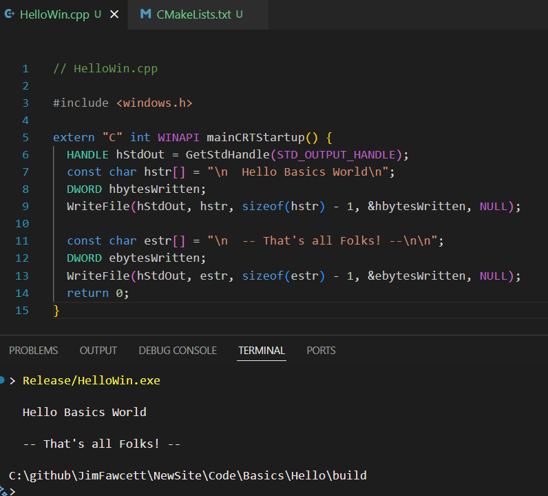

| Section | Description | Entry Point |
|---|---|---|
| Basics Story | A narrative walkthrough of computing platform concepts from hardware through software execution models. Chapters cover hardware organization, software layers, programming language execution models, tooling, data structures, concurrency, and deployment. | Prologue |
| Basics Bites | Short, focused pages each covering one platform topic: operating system platform survey, virtual memory and memory mapping, process scheduling, process structure, I/O models, system resources, programming language types, and development tooling. Each page is self-contained and can be read independently. | Platform |
| Repositories | Index of Basics code examples on GitHub, organized by topic. | Repositories |
| Glossary | Definitions for platform and operating system terms used across the track. | Glossary |
| References | Curated external links - tutorials, platform documentation, OS references, and programming resources. | Section 5 |
| Resource | Description |
|---|---|
| Operating Systems: Three Easy Pieces | Open-access book covering virtualization, concurrency, and persistence - virtual memory, scheduling, file systems, and more. |
| Linux Kernel Documentation | Detailed documentation for scheduling, memory management, interrupts, and I/O in a production operating system. |
| Wikipedia: Virtual Memory | Background and history of virtual memory, paging, segmentation, and performance tradeoffs. |
| Wikipedia: Task Scheduling | CPU scheduling algorithms including round-robin, priority scheduling, and multi-level feedback queues. |
| CS50 Introduction to Computer Science | Harvard's free online course covering fundamental programming, data, memory, and systems at an accessible level. |
| MDN Web Docs | Comprehensive reference for web standards, programming basics, and browser APIs. |
| GeeksforGeeks CS Tutorials | Practical tutorials on data structures, algorithms, operating systems, databases, and networks. |